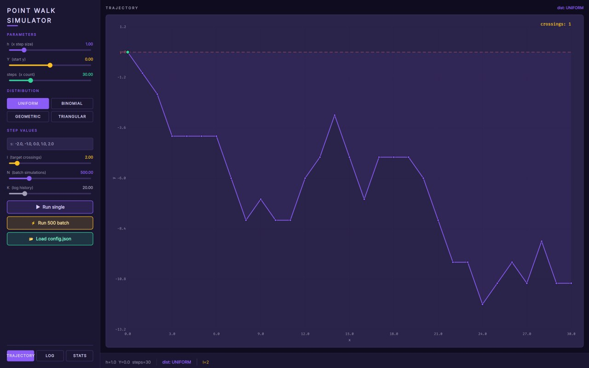
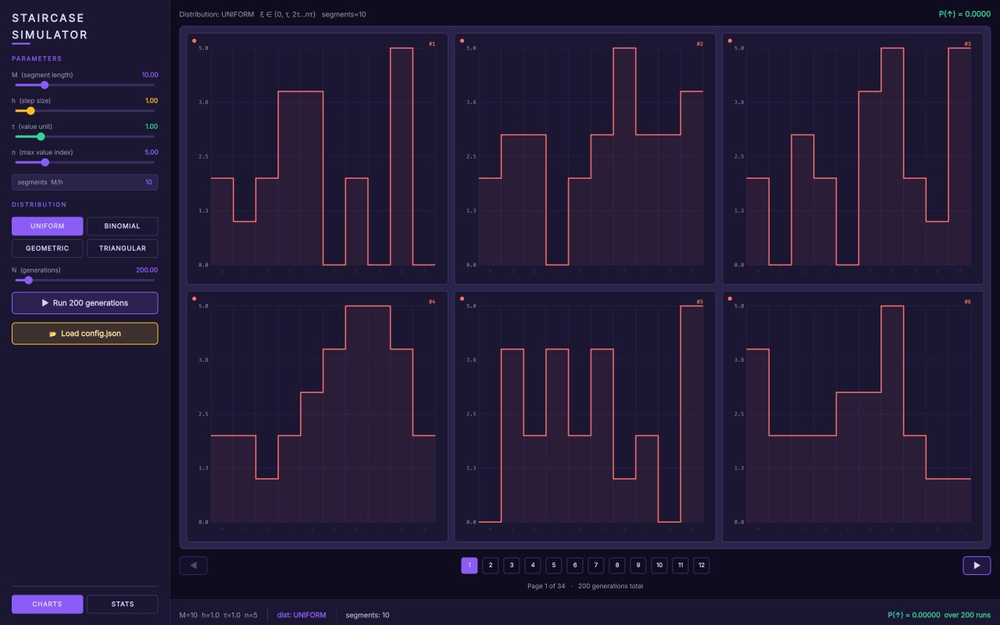
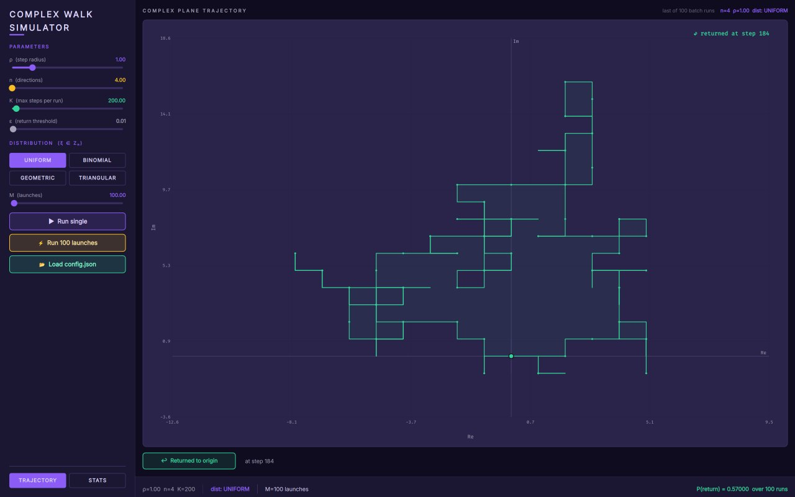
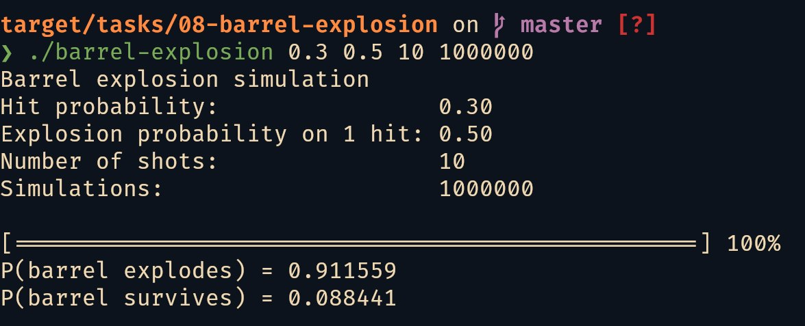
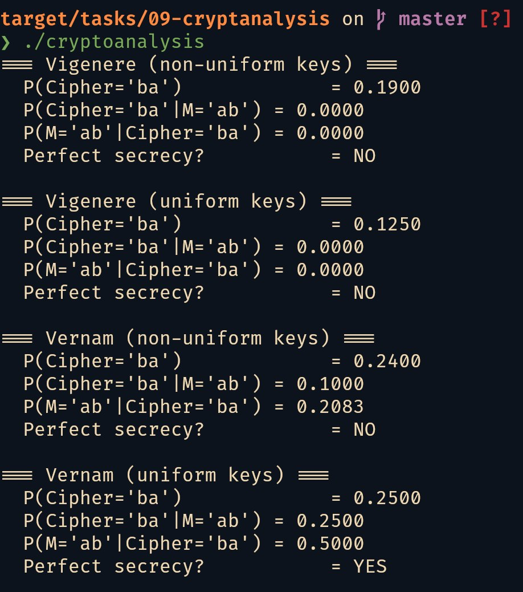
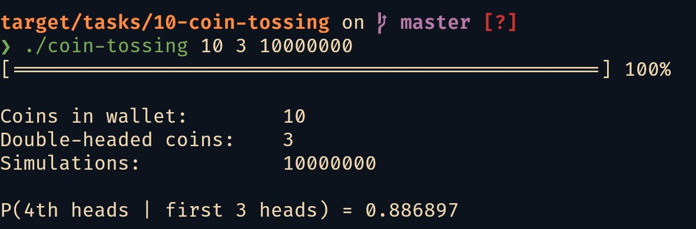
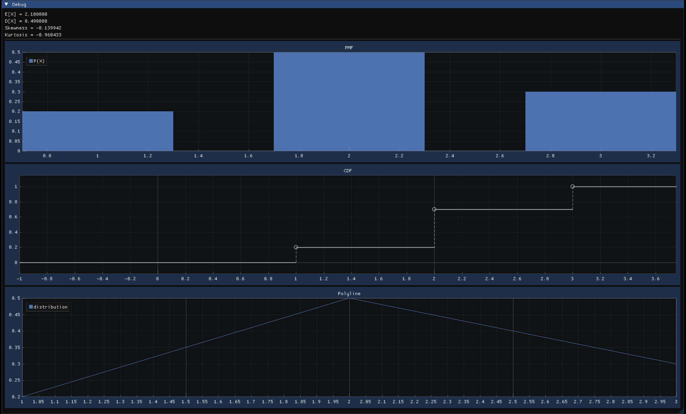
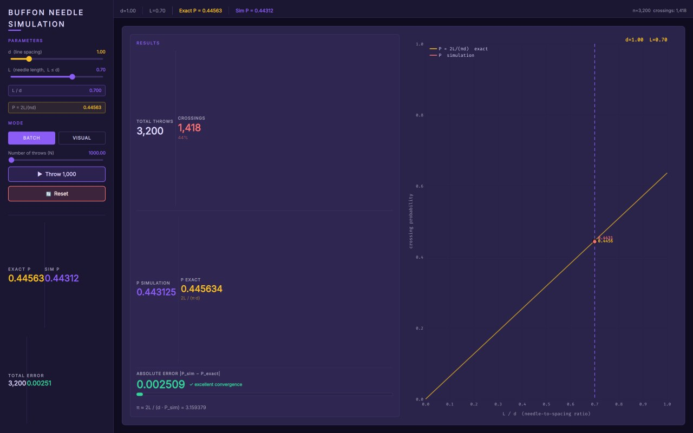
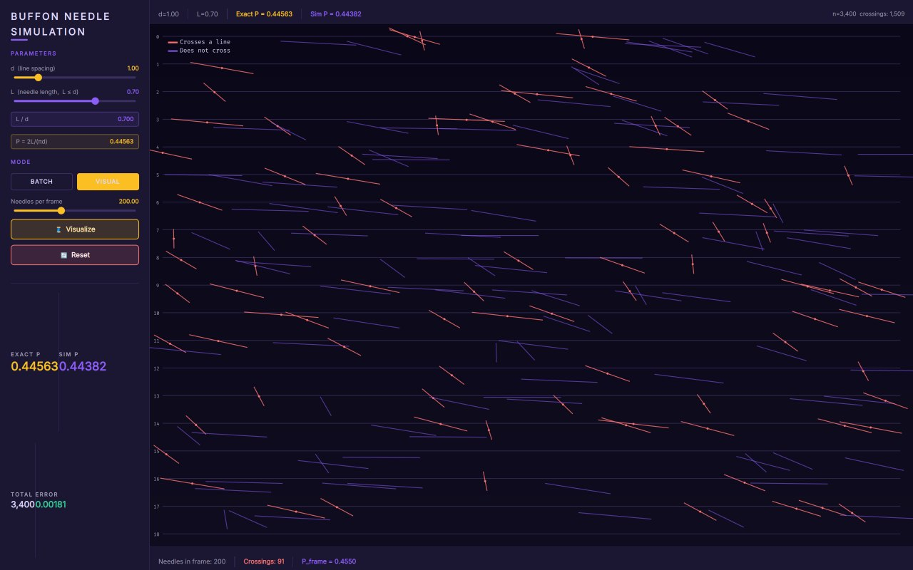
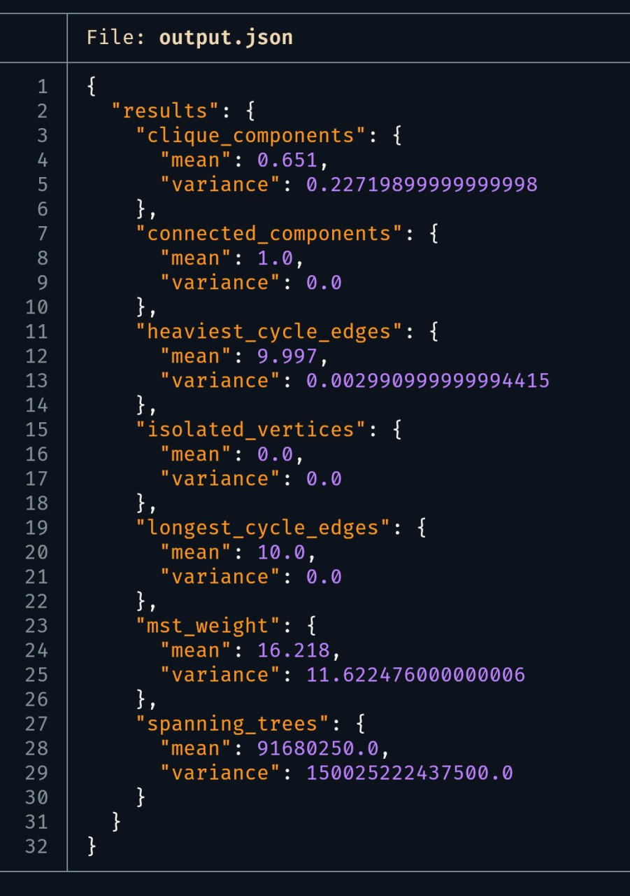

1. Введение
1.1. Цель и задачи
Цель работы — программная реализация комплекса задач вероятностного моделирования. Для достижения цели необходимо решить следующие задачи:
- разработать математические модели для каждого задания;
- продумать и создать архитектуру приложений;
- реализовать пользовательский интерфейс для управления параметрами моделирования;
- провести численные эксперименты и сравнить эмпирические результаты с теоретическими.
1.2. Используемые технологии
Программная реализация выполнена на языке C++ стандарта C++23 с использованием следующих библиотек и инструментов:
CMake(https://github.com/Kitware/CMake) — система сборки проекта;Qt6 Quick(https://github.com/qt/qtdeclarative) — фреймворк для разработки графического интерфейса;GLFW(https://github.com/glfw/glfw) — создание окна и контекста OpenGL;Dear ImGui(https://github.com/ocornut/imgui) — графический интерфейс;ImPlot(https://github.com/epezent/implot) — визуализация графиков;nlohmann::json(https://github.com/nlohmann/json) — парсинг конфигурационных файлов;
Все разработанные приложения устойчивы к аварийным завершениям, предусмотрена обработка ошибок ввода-вывода и некорректных параметров.
1.3. Структура пояснительной записки
Документ имеет следующую структуру:
- введение;
- теоретические основы вероятностного моделирования;
- описание задач с подробностями их реализации;
- список использованных источников;
- приложение со ссылкой на репозиторий исходного кода.
2. Теоретическая часть
2.1. Законы распределения случайных величин
Во всех задачах работы моделирование основано на генерации значений случайных величин с заданными законами распределения. Ниже приведены распределения, используемые в программной реализации.
Дискретное равномерное распределение.
\[P(X = x_i) = \frac{1}{n}, \quad i = 1, \ldots, n\]
Случайная величина принимает \(n\) значений с равными вероятностями. Применяется для равновероятного выбора элементов из конечного множества: выбор символа из алфавита (задача 1), выбор направления блуждания (задачи 4, 6, 7), выбор монеты (задача 10), равномерное распределение положения и угла иглы (задача 12).
Схема Бернулли и биномиальное распределение.
\[P(X = k) = \binom{n}{k} p^{k} (1-p)^{n-k}, \quad k = 0, \ldots, n\]
Биномиальное распределение моделирует число успехов в \(n\) независимых испытаниях Бернулли с вероятностью успеха \(p\). Используется в задаче 8 (число попаданий при обстреле бочки) и как один из законов распределения шага блуждания в задачах 4, 6, 7. Частный случай \(n = 1\) — распределение Бернулли — применяется в задачах 2, 8, 10 для моделирования бинарных случайных событий (заражение, попадание, орёл).
Усечённое геометрическое распределение.
\[P(X = k) = \frac{p(1-p)^k}{\sum_{i=0}^{n-1} p(1-p)^i}, \quad k = 0, \ldots, n-1\]
Геометрическое распределение описывает число неудач до первого успеха. В работе используется его усечённая версия (конечный носитель) для генерации значений шага блуждания с убывающей вероятностью в задачах 4, 6, 7.
Дискретное треугольное распределение.
\[P(X = x_k) \propto \begin{cases} \dfrac{2(x_k - a)}{(c-a)(b-a)}, & a \le x_k \le b, \\[6pt] \dfrac{2(c - x_k)}{(c-a)(c-b)}, & b \le x_k \le c \end{cases}\]
Треугольное распределение применяется в задачах 4, 6, 7 как один из законов для генерации шага или направления. Непрерывное треугольное распределение \(\operatorname{Tri}(a,b,c)\) дискретизируется округлением до ближайшего допустимого значения.
Непрерывное равномерное распределение.
\[f(x) = \frac{1}{b-a}, \quad x \in [a, b]\]
Непрерывное равномерное распределение задаётся плотностью вероятности, постоянной на отрезке \([a, b]\). Величина \(U \sim U(0,1)\) является базовой для генерации всех остальных распределений, поскольку любое преобразование случайной величины \(U\) даёт новую случайную величину с заданным законом. В работе \(U(0,1)\) используется в задаче 5 для генерации символов кластера по заданному распределению на алфавите.
2.2. Метод Монте-Карло и закон больших чисел
Метод Монте-Карло — численный метод, основанный на многократной реализации случайного процесса с последующим статистическим усреднением. В работе метод применяется для эмпирической оценки вероятностей событий, допускающих стохастическое моделирование.
Пусть \(\nu_n\) — число появлений события \(A\) в \(n\) независимых испытаниях, и \(p = P(A)\) — теоретическая вероятность. Согласно теореме Бернулли (форме закона больших чисел), для любого \(\varepsilon > 0\):
\[\lim_{n \to \infty} P\!\left( \left| \frac{\nu_n}{n} - p \right| < \varepsilon \right) = 1\]
Относительная частота \(\hat{p}_n = \nu_n / n\) сходится по вероятности к \(p\) при росте числа испытаний. Это фундаментальное утверждение оправдывает применение метода Монте-Карло: чем больше экспериментов проведено, тем точнее эмпирическая оценка.
Количественную оценку скорости сходимости даёт неравенство Чебышёва:
\[P\!\left( \left| \frac{\nu_n}{n} - p \right| \ge \varepsilon \right) \le \frac{p(1-p)}{n\varepsilon^2}\]
Неравенство показывает, что вероятность отклонения частоты от истинного значения убывает обратно пропорционально \(n\): для гарантии малой ошибки \(\varepsilon\) требуется \(O(1/\varepsilon^2)\) испытаний.
2.3. Центральная предельная теорема и доверительные интервалы
Неравенство Чебышёва даёт грубую оценку. Для более точной характеристики погрешности используется центральная предельная теорема (ЦПТ). Для схемы Бернулли случайная величина \(\nu_n\) имеет биномиальное распределение, и ЦПТ утверждает:
\[\frac{\nu_n - np}{\sqrt{np(1-p)}} \xrightarrow{d} N(0, 1)\]
Нормированная частота асимптотически нормальна. Это позволяет построить доверительный интервал для неизвестной вероятности \(p\):
\[\hat{p} \pm z_{\alpha/2} \sqrt{\frac{\hat{p}(1-\hat{p})}{n}}\]
где \(\hat{p} = \nu_n / n\) — эмпирическая вероятность, \(z_{\alpha/2}\) — квантиль стандартного нормального распределения. Для доверительной вероятности \(95\%\) (\(\alpha = 0{,}05\)) \(z_{0{,}025} \approx 1{,}96\).
Полуширина доверительного интервала убывает как \(\Delta \propto 1/\sqrt{n}\), что означает: для увеличения точности на порядок необходимо увеличить число испытаний в 100 раз. Эта оценка используется во всех задачах для характеризации точности полученных эмпирических вероятностей.
В настоящей работе для всех вычислительных экспериментов указывается \(95\%\)-й доверительный интервал (где применимо), что позволяет объективно судить о сходимости эмпирических частот к теоретическим значениям и сравнивать точность различных оценок.
3. Практическая часть
3.1. Задача 1. Выбор символа из алфавита
Из упорядоченного алфавита, содержащего \(N\) различных символов, последовательно выбирают два символа: сначала один, затем — один из оставшихся. Все исходы считаются равновероятными. Требуется определить вероятность того, что в первый раз, во второй раз и оба раза будет выбран символ с чётным номером. Индексация элементов алфавита начинается с \(1\). Рассматриваются два варианта нумерации после первой выборки: а) индексы оставшихся элементов не изменяются; б) индексы изменяются (переиндексируются начиная с \(1\)).
3.1.1. Аналитическое решение
Пусть алфавит содержит \(N\) символов с номерами от \(1\) до \(N\). Число чётных номеров равно \(\lfloor N/2 \rfloor\). Первый символ выбирается равновероятно из всех \(N\) элементов.
Случай а) — фиксированные индексы.
\[P(\text{первый чётный}) = \frac{\lfloor N/2 \rfloor}{N}\]
При фиксированных индексах после удаления первого элемента оставшиеся \(N-1\) символов сохраняют свои номера. Вероятность того, что второй выбранный символ имеет чётный номер, зависит от чётности первого:
\[P(\text{второй чётный}) = \frac{\lfloor N/2 \rfloor}{N} \cdot \frac{\lfloor N/2 \rfloor - 1}{N-1} + \frac{\lceil N/2 \rceil}{N} \cdot \frac{\lfloor N/2 \rfloor}{N-1}\]
\[P(\text{оба чётных}) = \frac{\lfloor N/2 \rfloor}{N} \cdot \frac{\lfloor N/2 \rfloor - 1}{N - 1}\]
Случай б) — переиндексация после первой выборки.
После удаления первого элемента оставшиеся \(N-1\) символов получают новые порядковые номера от \(1\) до \(N-1\). Число чётных позиций среди \(N-1\) элементов равно \(\lfloor (N-1)/2 \rfloor\).
\[P(\text{первый чётный}) = \frac{\lfloor N/2 \rfloor}{N}\]
\[P(\text{второй чётный}) = \frac{\lfloor (N-1)/2 \rfloor}{N-1}\]
\[P(\text{оба чётных}) = \frac{\lfloor N/2 \rfloor}{N} \cdot \frac{\lfloor (N-1)/2 \rfloor}{N-1}\]
3.1.2. Эмпирическая проверка
Программа принимает два параметра командной строки: мощность алфавита \(N\) и количество экспериментов \(C\). Для генерации случайных чисел используется Вихрь Мерсенна (std::mt19937). Запуск серии экспериментов выполняется через вспомогательный класс TaskRunner.
auto experiment_fixed_indices = [alphabet_size](auto& rng) {
std::uniform_int_distribution<size_t> dist1(1, alphabet_size);
size_t first = dist1(rng);
std::vector<size_t> remaining;
remaining.reserve(alphabet_size - 1);
for (size_t i = 1; i <= alphabet_size; i++) {
if (i != first) remaining.push_back(i);
}
std::uniform_int_distribution<size_t> dist2(0, remaining.size() - 1);
size_t second = remaining[dist2(rng)];
return Outcome{first % 2 == 0, second % 2 == 0};
};
auto experiment_reindexed = [alphabet_size](auto& rng) {
std::vector<size_t> indices(alphabet_size);
std::iota(indices.begin(), indices.end(), 1);
std::uniform_int_distribution<size_t> dist1(0, indices.size() - 1);
size_t first_pos = dist1(rng);
bool first_even = (first_pos + 1) % 2 == 0;
indices.erase(indices.begin() + first_pos);
std::uniform_int_distribution<size_t> dist2(0, indices.size() - 1);
size_t second_pos = dist2(rng);
bool second_even = (second_pos + 1) % 2 == 0;
return Outcome{first_even, second_even};
};
Вычислительный эксперимент проведён при \(N = 100\), \(C = 10^8\).
Результаты эксперимента представлены на рис. 1.

Figure 1: Результаты эксперимента при \(N = 100\), \(C = 10^8\)
Полученные эмпирические вероятности:
| Вариант нумерации | Первый чётный | Второй чётный | Оба чётных |
|---|---|---|---|
| Фиксированные индексы | 0.499913 | 0.500032 | 0.247482 |
| Переиндексация | 0.499995 | 0.494859 | 0.247438 |
Теоретические значения при \(N = 100\):
\[P_{\text{first}} = \frac{50}{100} = 0.5\] \[P_{\text{second}}^{(a)} = 0.5\] \[P_{\text{second}}^{(b)} = \frac{49}{99} \approx 0.494949\] \[P_{\text{both}} = \frac{50}{100} \cdot \frac{49}{99} \approx 0.247475\]
Сравнение показывает высокую точность моделирования. Максимальное абсолютное отклонение составляет \(8.7 \times 10^{-5}\) для случая фиксированных индексов и \(9.0 \times 10^{-5}\) для случая переиндексации.
3.2. Задача 2. Моделирование эпидемии на графе социальных контактов
Требуется реализовать стохастическую модель распространения инфекции контактным путём на неориентированном графе знакомств. Для каждого контакта «здоровый—инфицированный» заражение происходит с вероятностью \(p_1 \in (0; 1]\). Инфицированный выздоравливает на каждом шаге с вероятностью \(p_2 \in [0; 1]\).
3.2.1. Модель и структуры данных
Граф контактов хранится в виде списка смежности. Состояния образуют конечный автомат: Healthy \(\to\) Infected (с вероятностью \(p_1\) при контакте), Infected \(\to\) Recovered (с вероятностью \(p_2\) на каждом шаге). Состояние Recovered — поглощающее.
enum class PersonState { Healthy, Infected, Recovered };
struct Person {
int id;
PersonState state = PersonState::Healthy;
std::vector<int> contacts;
};
3.2.2. Детерминированная SIR-модель
В предположении полного перемешивания популяции стохастическая модель на графе допускает детерминированное приближение — дискретную SIR-модель:
\[\begin{cases} S_{t+1} = S_t - p_1 \cdot S_t \cdot I_t, \\[4pt] I_{t+1} = I_t + p_1 \cdot S_t \cdot I_t - p_2 \cdot I_t, \\[4pt] R_{t+1} = R_t + p_2 \cdot I_t \end{cases}\]
Порог коллективного иммунитета достигается, когда доля здоровых \(S_t\) опускается ниже \(p_2 / p_1\).
3.2.3. Ядро симуляции
const std::vector<Person>& Simulation::step() {
if (m_current_step == 0) {
std::uniform_int_distribution<size_t> pick(0, m_people.size() - 1);
m_people[pick(m_rng)].state = PersonState::Infected;
m_current_step++;
return m_people;
}
std::vector<int> newly_infected;
for (const auto& person : m_people) {
if (person.state != PersonState::Infected) continue;
for (int cid : person.contacts) {
if ((m_people[cid].state == PersonState::Recovered ||
m_people[cid].state == PersonState::Healthy) &&
m_dist(m_rng) < p_infect)
newly_infected.push_back(cid);
}
}
for (int id : newly_infected)
m_people[id].state = PersonState::Infected;
for (auto& person : m_people)
if (person.state == PersonState::Infected &&
m_dist(m_rng) < p_recover)
person.state = PersonState::Recovered;
m_current_step++;
return m_people;
}
3.2.4. Аналитические запросы к результатам
Реализованы четыре поисковых запроса, выполняемых за один проход по массиву вершин:
- Все не заразившиеся — вершины в состоянии Healthy.
- Все исцелившиеся — вершины в состоянии Recovered.
- Исцелившиеся, чьё окружение не исцелилось — Recovered-вершины, среди соседей которых есть не-Recovered.
- Не заразившиеся, чьё окружение полностью заражено — Healthy-вершины, у которых все соседи Infected.
std::vector<int> Simulation::recovered_with_sick_contacts() const {
std::vector<int> r;
for (const auto& p : m_people) {
if (p.state != PersonState::Recovered) continue;
for (int cid : p.contacts) {
if (m_people[cid].state != PersonState::Recovered) {
r.push_back(p.id);
break;
}
}
}
return r;
}
3.2.5. Тестовые данные и визуализация
Тестовый граф — датасет Facebook-страниц категории «Artist» из коллекции GEMSEC. Параметры моделирования: \(p_1 = 0.3\), \(p_2 = 0.1\). Визуализация графа реализована на QML с использованием Canvas. Для работы с большими графами строится BFS-подграф от вершины с максимальной степенью. Размещение вершин — force-based алгоритм.
Отрисовка дифференцирует состояния вершин цветом: зелёный — Healthy, красный — Infected, синий — Recovered.

Figure 2: Интерфейс приложения

Figure 3: Пример аналитического запроса
3.3. Задача 3. Распространение слухов
В городе проживает \(n+1\) человек. Один из них узнаёт новость и передаёт её другому, тот — следующему, и так далее. На каждом шаге каждый знающий новость выбирает \(N\) случайных адресатов из \(n\) остальных жителей и сообщает новость им. Требуется определить вероятность того, что новость будет передана \(r\) раз без: а) возвращения к первому узнавшему (режим ReturnToSender); б) повторного сообщения кому-либо (режим RepeatedMessage).
3.3.1. Модель и алгоритм
Процесс моделируется на полном графе из \(n+1\) вершин. Вершина \(0\) — источник. Состояние системы — булев массив knows размера \(n+1\), изначально knows[0] = true.
3.3.2. Ядро симуляции
std::pair<bool, std::vector<Simulation::GraphNode>>
Simulation::run(size_t r, int seed) {
m_rng = std::mt19937(seed);
std::uniform_int_distribution<int> dist(0, m_n);
std::vector<bool> knows(m_n + 1, false);
knows[0] = true;
std::vector<GraphNode> graph;
for (size_t step = 0; step < r; ++step) {
std::vector<size_t> knowers;
for (size_t i = 0; i <= m_n; ++i)
if (knows[i]) knowers.push_back(i);
for (size_t sender : knowers) {
for (size_t j = 0; j < m_N; ++j) {
int target;
do { target = dist(m_rng); }
while (static_cast<size_t>(target) == sender);
if (m_mode == Mode::ReturnToSender) {
if (target == 0) {
graph.push_back({sender, 0, step});
return {false, graph};
}
} else {
if (knows[static_cast<size_t>(target)]) {
graph.push_back({sender,
static_cast<size_t>(target), step});
return {false, graph};
}
}
graph.push_back({sender,
static_cast<size_t>(target), step});
knows[static_cast<size_t>(target)] = true;
}
}
}
return {true, graph};
}
3.3.3. Визуализация и результаты
Интерфейс позволяет настраивать \(n\), \(r\), \(N\), \(K\), выбирать режим и запускать моделирование в пошаговом или быстром пакетном режиме.

Figure 4: Интерфейс приложения: настройка параметров, статистика, граф передачи

Figure 5: Граф успешного эксперимента

Figure 6: Граф неудачного эксперимента
3.4. Задача 4. Моделирование движения материальной точки со случайным шагом
На координатной плоскости \(xOy\) материальная точка движется с постоянным шагом \(h\) по оси абсцисс, стартуя из точки \((0; Y)\). Закон движения по оси ординат определяется случайной величиной \(s\), принимающей значения \(\{s_1, s_2, \ldots, s_n\}\).
3.4.1. Законы распределения случайной величины \(s\)
Поддерживаются четыре распределения:
- Равномерное (Uniform) — каждое значение \(s_j\) выбирается с равной вероятностью \(1/n\).
- Биномиальное (Binomial) — индекс \(j\) выбирается по биномиальному закону \(\operatorname{Bin}(m, p)\).
- Конечное геометрическое (FiniteGeometric) — \(P(j) \propto (1-p)^{j} p\).
- Дискретное треугольное (DiscreteTriangular) — \(\operatorname{Tri}(a, b, c)\) дискретизируется округлением.
double PointWalkSimulation::sample_step() {
int n = (int)m_cfg.steps.size() - 1;
if (n < 0) return 0.0;
switch (m_cfg.dist) {
case Distribution::Uniform: {
std::uniform_int_distribution<int> d(0, n);
return m_cfg.steps[d(m_rng)];
}
case Distribution::Binomial: {
std::binomial_distribution<int>
d(m_cfg.binom_trials, m_cfg.binom_p);
int k = d(m_rng) % (n + 1);
return m_cfg.steps[k];
}
case Distribution::FiniteGeometric: {
std::vector<double> weights(n + 1);
double sum = 0.0;
for (int i = 0; i <= n; i++) {
weights[i] = std::pow(1.0 - m_cfg.geom_p, i)
* m_cfg.geom_p;
sum += weights[i];
}
for (auto& w : weights) w /= sum;
std::discrete_distribution<int>
d(weights.begin(), weights.end());
return m_cfg.steps[d(m_rng)];
}
case Distribution::DiscreteTriangular: {
std::uniform_real_distribution<double> u01(0.0, 1.0);
double u = u01(m_rng);
double Fc = (m_cfg.tri_b - m_cfg.tri_a)
/ (m_cfg.tri_c - m_cfg.tri_a);
double sample;
if (u < Fc)
sample = m_cfg.tri_a
+ std::sqrt(u * (m_cfg.tri_c - m_cfg.tri_a)
* (m_cfg.tri_b - m_cfg.tri_a));
else
sample = m_cfg.tri_c
- std::sqrt((1.0 - u) * (m_cfg.tri_c - m_cfg.tri_a)
* (m_cfg.tri_c - m_cfg.tri_b));
int best = 0;
double bestDist = std::abs(m_cfg.steps[0] - sample);
for (int i = 1; i <= n; i++) {
double d = std::abs(m_cfg.steps[i] - sample);
if (d < bestDist) { bestDist = d; best = i; }
}
return m_cfg.steps[best];
}
}
return 0.0;
}
3.4.2. Ядро симуляции
Класс PointWalkSimulation инкапсулирует параметры моделирования и генератор псевдослучайных чисел std::mt19937.
WalkResult PointWalkSimulation::run_single() {
WalkResult r;
r.start_y = m_cfg.Y;
int steps = m_cfg.x_steps;
r.xs.reserve(steps + 1);
r.ys.reserve(steps + 1);
double x = 0.0, y = m_cfg.Y;
r.xs.push_back(x);
r.ys.push_back(y);
for (int i = 0; i < steps; i++) {
x += m_cfg.h;
y += sample_step();
r.xs.push_back(x);
r.ys.push_back(y);
}
r.crossings = count_crossings(r.ys);
return r;
}
int PointWalkSimulation::count_crossings(
const std::vector<double>& ys) {
int cnt = 0;
for (size_t i = 1; i < ys.size(); i++) {
double a = ys[i - 1];
double b = ys[i];
if (a == 0.0 && b != 0.0) { cnt++; continue; }
if (b == 0.0) { cnt++; continue; }
if ((a > 0.0) != (b > 0.0)) cnt++;
}
return cnt;
}
3.4.3. Конфигурационный файл
Параметры моделирования загружаются из JSON-файла:
{
"h": 1.5,
"Y": 0.0,
"x_steps": 50,
"K": 20,
"l": 2,
"N_simulations": 500,
"distribution": "uniform",
"steps": [-2.0, -1.0, 0.0, 1.0, 2.0],
"binomial_trials": 4,
"binomial_p": 0.5,
"geometric_p": 0.4,
"triangular_a": 0.0,
"triangular_b": 0.5,
"triangular_c": 1.0
}
3.4.4. Графический интерфейс
Приложение построено на Qt6 Quick. Интерфейс содержит боковую панель управления и центральную область с графиком траектории.

Figure 7: Интерфейс приложения: панель управления и график траектории
3.5. Задача 5. Кластеры и \(k\)-паттерны
Дана серия из \(M\) кластеров, каждый содержит \(n\) ячеек. В каждую ячейку помещается символ из алфавита \(A\) мощности \(r\). Лексема длины \(k\) называется \(k\)-паттерном. Два соседних кластера соединяемы по заданному \(k\)-паттерну, если конкатенация некоторого суффикса левого кластера с некоторым префиксом правого кластера в точности даёт этот паттерн.
3.5.1. Модель и критерий соединяемости
Кластеры \(C_i\) и \(C_{i+1}\) соединяемы по паттерну \(P\) длины \(k\), если существуют натуральные \(a\) и \(b\) такие, что:
\[a + b = k, \quad 1 \le a \le n-1, \quad 1 \le b \le n-1\] \[\operatorname{suffix}_a(C_i) \oplus \operatorname{prefix}_b(C_{i+1}) = P\]
3.5.2. Алгоритм проверки соединяемости
bool ClusterSimulator::are_connected(
const std::string& left,
const std::string& right) const {
for (int a = 1; a < m_cells_per_cluster
&& a < m_pattern_length; ++a) {
int b = m_pattern_length - a;
if (b < 1 || b >= m_cells_per_cluster) continue;
std::string suffix = left.substr(
m_cells_per_cluster - a, a);
std::string prefix = right.substr(0, b);
if (suffix + prefix == m_pattern) return true;
}
return false;
}
3.5.3. Генерация кластеров
Кластеры генерируются побуквенно методом обратного преобразования, согласно заданному распределению вероятностей на алфавите.
std::string ClusterSimulator::generate_cluster() {
std::string cluster;
for (int i = 0; i < m_cells_per_cluster; ++i) {
double r = m_distribution(m_generator);
for (size_t j = 0; j < m_cumulative.size(); ++j) {
if (r < m_cumulative[j]) {
cluster += m_symbols[j];
break;
}
}
}
return cluster;
}
3.5.4. Результаты моделирования
Эксперименты проведены при \(M = 10\), \(n = 5\), \(k = 3\), \(A = \{0, 1\}\), \(C = 10^6\).
В первом эксперименте с равномерным распределением (\(P(0)=P(1)=0.5\)) и паттерном \(101\) распределение числа соединяемых пар \(D\) близко к симметричному с максимумом в точке \(D = 3\): \(P(D=3) \approx 0.275\), на краях \(P(D=0) \approx 0.039\) и \(P(D=7) \approx 0.001\) (\(P(D=8) \approx 0.000\)). Вероятность одновременной соединяемости всех девяти пар составляет \(P_{\text{all}} \approx 0.039\).
При смещённом распределении (\(P(1) = 0.7\), паттерн \(101\)) соединяемость резко возрастает: \(P_{\text{all}} \approx 0.182\), максимум смещается в область больших \(D\) (\(P(D=6) \approx 0.290\)), а вероятность малых \(D\) становится пренебрежимо малой (\(P(D=0) \approx 0.001\)).
Паттерн \(111\) при равномерном распределении практически не даёт соединяемых пар: \(P_{\text{all}} \approx 0.000\), а с вероятностью \(P(D \le 2) \approx 0.990\) соединяемыми оказываются не более двух пар из рядом стоящих кластеров; значения \(D \ge 4\) практически не наблюдаются.
При равномерном распределении и паттерне \(101\) распределение \(D\) близко к симметричному с максимумом в \(D = 3\). При смещённом распределении (\(P(1) = 0.7\)) вероятность всех соединяемых пар резко возрастает. Паттерн \(111\) при равномерном распределении практически не даёт соединяемых пар.
3.6. Задача 6. Ступенчатая фигура
Дан отрезок \([0; M]\), \(M > 0\), разбитый на отрезки длины \(h\). На каждом подотрезке определена случайная величина \(\xi\), принимающая значения из множества \(\{0, \tau, 2\tau, \ldots, n\tau\}\).
3.6.1. Математическая модель
\[f(x) = \xi_i, \quad x \in (x_{i-1}, x_i], \quad i = 1, \ldots, N\]
Ступенчатая фигура называется строго возрастающей лестницей, если \(\xi_1 < \xi_2 < \cdots < \xi_N\).
3.6.2. Ядро симуляции
double StaircaseSimulation::sample_one() {
int n = m_cfg.n_values;
double tau = m_cfg.tau;
switch (m_cfg.dist) {
case Distribution::Uniform: {
std::uniform_int_distribution<int> d(0, n);
return d(m_rng) * tau;
}
case Distribution::Binomial: {
std::binomial_distribution<int>
d(m_cfg.binom_trials, m_cfg.binom_p);
int k = d(m_rng);
return (k % (n + 1)) * tau;
}
case Distribution::FiniteGeometric: {
std::vector<double> weights(n + 1);
double sum = 0.0;
for (int i = 0; i <= n; i++) {
weights[i] = std::pow(1.0 - m_cfg.geom_p, i)
* m_cfg.geom_p;
sum += weights[i];
}
for (auto& w : weights) w /= sum;
std::discrete_distribution<int>
d(weights.begin(), weights.end());
return d(m_rng) * tau;
}
case Distribution::DiscreteTriangular: {
// ... обратное преобразование
return best * tau;
}
}
return 0.0;
}
bool StaircaseSimulation::check_strictly_increasing(
const std::vector<double>& v) {
for (size_t i = 1; i < v.size(); i++)
if (v[i] <= v[i - 1]) return false;
return !v.empty();
}
3.6.3. Аналитическая вероятность для равномерного распределения
\[P_{\text{inc}} = \begin{cases} \dfrac{\binom{n+1}{N}}{(n+1)^N}, & N \le n+1, \\[8pt] 0, & N > n+1 \end{cases}\]
3.6.4. Графический интерфейс
Приложение построено на Qt6 Quick. Боковая панель содержит настройки параметров и область статистики. Сгенерированные ступенчатые фигуры отображаются на сетке по 6 штук на страницу с пагинацией.

Figure 8: Интерфейс приложения: панель управления, статистика и сетка фигур
3.7. Задача 7. Комплексная плоскость и случайные блуждания с фиксированным шагом
Рассматривается случайное блуждание на комплексной плоскости с фиксированной длиной шага. Направление каждого шага выбирается из конечного набора равноотстоящих углов.
3.7.1. Математическая модель
\[z_k = z_{k-1} + \rho \cdot e^{i\frac{2\pi}{n}\xi_k}, \qquad z_0 = 0\]
\[\begin{cases} x_k = x_{k-1} + \rho \cos\!\big(\frac{2\pi}{n}\xi_k\big) \\[4pt] y_k = y_{k-1} + \rho \sin\!\big(\frac{2\pi}{n}\xi_k\big) \end{cases} \qquad (x_0, y_0) = (0, 0)\]
Поддерживаются четыре закона распределения индекса \(\xi_k\): равномерное, биномиальное, усечённое геометрическое и дискретное треугольное.
| Распределение | Функция вероятности | Параметры |
|---|---|---|
| Равномерное | \(P(\xi = j) = 1/n\) | --- |
| Биномиальное | \(P(\xi = j) = \binom{m}{j} p^j (1-p)^{m-j}\) (mod \(n\)) | \(m\), \(p\) |
| Геометрическое (ус.) | \(P(\xi = j) = \frac{p(1-p)^j}{\sum_{i=0}^{n-1} p(1-p)^i}\) | \(p\) |
| Дискр. треугольное | отображение Triangular\((a,b,c)\) на \(\{0,\ldots,n-1\}\) | \(a\), \(b\), \(c\) |
Блуждание считается вернувшимся в начало координат, если \(\|z_k\| = \sqrt{x_k^2 + y_k^2} < \varepsilon\).
3.7.2. Ядро симуляции
WalkResult ComplexWalkSimulation::run_single() {
WalkResult r;
r.path.push_back({0.0, 0.0});
for (int step = 1; step <= m_cfg.K; step++) {
int xi = sample_xi();
double dx = m_cfg.rho
* std::cos(2.0 * M_PI / m_cfg.n * xi);
double dy = m_cfg.rho
* std::sin(2.0 * M_PI / m_cfg.n * xi);
Point2D pt{r.path.back().x + dx,
r.path.back().y + dy};
r.path.push_back(pt);
if (std::hypot(pt.x, pt.y) < m_cfg.epsilon) {
r.returned = true;
r.return_step = step;
return r;
}
}
r.returned = false;
r.return_step = -1;
return r;
}
int ComplexWalkSimulation::sample_xi_triangular() {
double u = std::uniform_real_distribution<double>(
0.0, 1.0)(m_rng);
double fc = (m_cfg.tri_c - m_cfg.tri_a);
double fb = (m_cfg.tri_b - m_cfg.tri_a) / fc;
double s;
if (u <= fb) {
s = m_cfg.tri_a
+ std::sqrt(u * fc * (m_cfg.tri_b - m_cfg.tri_a));
} else {
s = m_cfg.tri_c
- std::sqrt((1.0 - u) * fc
* (m_cfg.tri_c - m_cfg.tri_b));
}
int idx = static_cast<int>(
s / fc * (m_cfg.n - 1) + 0.5);
return std::clamp(idx, 0, m_cfg.n - 1);
}
3.7.3. Графический интерфейс
Приложение построено на Qt6 Quick. Левая панель содержит органы управления параметрами; правая область отображает траекторию или статистику. Визуализация на комплексной плоскости с координатной сеткой и маркерами начала/конца. Траектории, вернувшиеся в начало, выделяются зелёным цветом.

Figure 9: Интерфейс приложения: панель управления и траектория на комплексной плоскости
3.8. Задача 8. Моделирование взрыва бочки с бензином
Рассматривается вероятностная модель разрушения бочки с бензином при многократном обстреле. Каждый выстрел независимо поражает цель с заданной вероятностью. Бочка взрывается при двух и более попаданиях; при одном попадании взрыв происходит с дополнительной условной вероятностью.
3.8.1. Математическая модель
Производится \(n\) независимых выстрелов по бочке. Число попаданий \(X\) имеет биномиальное распределение:
\[P(X = k) = \binom{n}{k} p^k (1-p)^{n-k}\]
Бочка взрывается при \(X \ge 2\) (гарантированный взрыв) и при \(X = 1\) с вероятностью \(p_1\). Вероятность взрыва:
\[P(\text{взрыв}) = 1 - (1-p)^n - n p (1-p)^{n-1} (1-p_1)\]
3.8.2. Программная реализация
Задача реализована в виде консольного приложения, использующего шаблонный класс TaskRunner.
auto experiment = [p, p1, n](auto& rng) -> bool {
std::bernoulli_distribution hit(p);
int hits = 0;
for (int i = 0; i < n; i++)
if (hit(rng)) ++hits;
if (hits == 0) return false;
if (hits >= 2) return true;
return std::bernoulli_distribution(p1)(rng);
};
int main(int argc, char** argv) {
if (argc != 5) { print_usage(argv[0]); return 1; }
double p = std::stod(argv[1]);
double p1 = std::stod(argv[2]);
int n = std::stoi(argv[3]);
size_t sim = std::stoull(argv[4]);
auto experiment = /* ... lambda above ... */;
TaskRunner runner;
auto results = runner.run(experiment, sim);
auto freq = tally(results);
size_t explosions = freq[true];
double p_explosion = 1.0 * explosions / sim;
std::println("P(barrel explodes) = {:.6f}",
p_explosion);
std::println("P(barrel survives) = {:.6f}",
1.0 - p_explosion);
return 0;
}

Figure 10: Результат моделирования взрыва бочки для \(p = 0{,}3\), \(p_1 = 0{,}5\), \(n = 10\)
3.9. Задача 9. Криптоанализ: совершенная секретность и теорема Шеннона
Рассматривается задача криптоанализа — оценка совершенной секретности шифров на малом пространстве сообщений и ключей.
3.9.1. Математическая модель
Задано конечное пространство сообщений \(M = \{m_1, \ldots, m_{|M|}\}\) с априорным распределением \(P(m)\) и пространство ключей \(K = \{k_1, \ldots, k_{|K|}\}\) с распределением \(P(k)\). Шифрование выполняется детерминированной функцией \(c = E(m, k)\).
Рассматриваются два алгоритма шифрования:
\[c_i = (m_i + k_{i \bmod |k|}) \bmod 26 \quad \text{(Виженер)}\]
\[c_i = (m_i \oplus k_{i \bmod |k|}) \bmod 26 \quad \text{(Вернам)}\]
Шенноновская совершенная секретность. Шифр обладает совершенной секретностью, если для всех \(m \in M\), \(c \in C\):
\[P(M = m | C = c) = P(M = m)\]
Апостериорная вероятность вычисляется по формуле Байеса:
\[P(M = m | C = c) = \frac{P(C = c | M = m) \cdot P(M = m)}{P(C = c)}\]
3.9.2. Программная реализация
Анализ выполняется полным перебором всех пар «сообщение—ключ».
void analyze(
const std::vector<std::string>& msgs,
const std::vector<double>& msg_probs,
const std::vector<std::string>& keys,
const std::vector<double>& key_probs,
const std::string& target_cipher,
const std::string& target_msg,
bool use_vigenere)
{
double p_cipher = 0.0;
for (size_t j = 0; j < msgs.size(); j++)
for (size_t s = 0; s < keys.size(); s++)
if (encrypt(msgs[j], keys[s], use_vigenere)
== target_cipher)
p_cipher += msg_probs[j] * key_probs[s];
double p_c_given_m = 0.0;
for (size_t s = 0; s < keys.size(); s++)
if (encrypt(target_msg, keys[s], use_vigenere)
== target_cipher)
p_c_given_m += key_probs[s];
double p_m_given_c =
p_c_given_m * msg_probs[/* idx */] / p_cipher;
}
std::string vigenere_encrypt(
const std::string& msg, const std::string& key)
{
std::string out(msg.size(), 'a');
for (size_t i = 0; i < msg.size(); i++)
out[i] = 'a' + (msg[i] - 'a'
+ key[i % key.size()] - 'a') % 26;
return out;
}
std::string vernam_encrypt(
const std::string& msg, const std::string& key)
{
std::string out(msg.size(), 'a');
for (size_t i = 0; i < msg.size(); i++)
out[i] = 'a' + ((msg[i] - 'a')
^ (key[i % key.size()] - 'a')) % 26;
return out;
}
Программа тестирует четыре сценария: шифр Виженера и шифр Вернама с равномерным и неравномерным распределением ключей. Шифр Вернама с равномерным распределением ключей удовлетворяет условию совершенной секретности; шифр Виженера — нет, несмотря на \(|K| \ge |M|\).

Figure 11: Результат криптоанализа: вывод программы для всех четырёх сценариев
3.10. Задача 10. Подбрасывание монеты из кошелька: байесовская вероятностная модель
Рассматривается байесовская задача: в кошельке находится \(n\) монет, ровно \(k\) из которых — двуглавые (обе стороны — «орёл»). Наугад выбирается одна монета и подбрасывается 4 раза. Требуется оценить условную вероятность того, что четвёртый бросок выпадет «орлом» при условии, что первые три броска также дали «орла».
3.10.1. Математическая модель
Пусть \(D\) — событие «выбрана двуглавая монета», \(F\) — событие «выбрана честная монета». Априорные вероятности:
\[P(D) = \frac{k}{n}, \qquad P(F) = \frac{n - k}{n}\]
\[P(\text{4-й орёл} \mid \text{первые 3 орла}) = \frac{P(4H)}{P(3H)} = \frac{15k + n}{2(7k + n)}\]
Частные случаи: \(k = 0\) — \(P = 1/2\); \(k = n\) — \(P = 1\); \(n = 10, k = 3\) — \(P = 55/62 \approx 0{,}8871\).
3.10.2. Программная реализация
auto experiment = [n, k](auto& rng)
-> std::pair<bool, bool>
{
std::uniform_int_distribution<int> coin_dist(0, n - 1);
std::bernoulli_distribution fair(0.5);
int coin = coin_dist(rng);
bool double_headed = (coin < k);
bool t1 = double_headed ? true : fair(rng);
bool t2 = double_headed ? true : fair(rng);
bool t3 = double_headed ? true : fair(rng);
bool t4 = double_headed ? true : fair(rng);
bool first_three = t1 && t2 && t3;
return {first_three, first_three && t4};
};
int main(int argc, char** argv) {
int n = std::stoi(argv[1]);
int k = std::stoi(argv[2]);
size_t sim = std::stoull(argv[3]);
auto experiment = /* ... */;
TaskRunner runner;
auto results = runner.run(experiment, sim);
size_t three_heads = 0, four_heads = 0;
for (auto [cond, full] : results) {
if (cond) three_heads++;
if (full) four_heads++;
}
double p = 1.0 * four_heads / three_heads;
std::println(
"P(4th heads | first 3 heads) = {:.6f}", p);
return 0;
}

Figure 12: Результат моделирования для \(n = 10\), \(k = 3\), \(10^7\) испытаний
3.11. Задача 11. Дискретная случайная величина и её числовые характеристики
Разработана библиотека для работы с произвольными дискретными случайными величинами. Программа вычисляет числовые характеристики и визуализирует PMF и CDF.
3.11.1. Математическая модель
Дискретная случайная величина \(X\) задаётся множеством пар «значение—вероятность»: \(\{(x_1, p_1), (x_2, p_2), \ldots, (x_n, p_n)\}\).
\[\mu = \mathbb{E}[X] = \sum_{i=1}^{n} x_i \cdot p_i\]
\[\sigma^2 = \mathbb{D}[X] = \sum_{i=1}^{n} (x_i - \mu)^2 \cdot p_i\]
\[\gamma_1 = \frac{\mathbb{E}[(X - \mu)^3]}{\sigma^3} = \frac{\sum_{i=1}^{n} (x_i - \mu)^3 \cdot p_i}{\sigma^3}\]
\[\gamma_2 = \frac{\mathbb{E}[(X - \mu)^4]}{\sigma^4} - 3 = \frac{\sum_{i=1}^{n} (x_i - \mu)^4 \cdot p_i}{\sigma^4} - 3\]
Для независимых дискретных случайных величин \(X\) и \(Y\) определены сумма (свёртка) и произведение:
\[P(X + Y = z) = \sum_{x_i + y_j = z} p_i \cdot q_j\]
\[P(X \cdot Y = z) = \sum_{x_i \cdot y_j = z} p_i \cdot q_j\]
3.11.2. Программная реализация
class DiscreteRandomVariable {
public:
DiscreteRandomVariable(
std::vector<std::pair<double, double>> data);
std::vector<std::pair<double, double>> pmf() const;
std::vector<std::pair<double, double>> cdf() const;
double expectation() const;
double variance() const;
double skewness() const;
double kurtosis() const;
DiscreteRandomVariable operator+(
const DiscreteRandomVariable& other) const;
DiscreteRandomVariable operator*(
const DiscreteRandomVariable& other) const;
DiscreteRandomVariable operator*(double scalar) const;
void normalize();
void save_to_file(const std::string& path) const;
static DiscreteRandomVariable load_from_file(
const std::string& path);
private:
std::map<double, double> m_data;
void validate() const;
};
Приложение построено на GLFW + ImGui + ImPlot и визуализирует три графика: столбчатую диаграмму PMF, ступенчатую CDF и полигон распределения.

Figure 13: Визуализация дискретной случайной величины: PMF, CDF и полигон распределения
3.12. Задача 12. Моделирование Бюффона
Реализована классическая задача Бюффона о бросании иглы на плоскость с параллельными линиями. Методом Монте-Карло оценивается вероятность пересечения иглой линии.
3.12.1. Ядро симуляции
struct NeedleResult {
double x;
double phi;
bool crosses;
};
class NeedleSimulation {
public:
NeedleSimulation(double d, double L);
NeedleResult run_single();
std::vector<NeedleResult> run_batch(int n);
private:
double m_d, m_L;
std::mt19937 m_rng;
std::uniform_real_distribution<double> m_dist_x;
std::uniform_real_distribution<double> m_dist_phi;
};
NeedleResult NeedleSimulation::run_single() {
double x = m_dist_x(m_rng);
double phi = m_dist_phi(m_rng);
bool crosses = x <= (m_L / 2.0) * std::sin(phi);
return {x, phi, crosses};
}
3.12.2. Аналитический вывод вероятности пересечения
Пусть \(d\) — расстояние между параллельными линиями, \(L\) — длина иглы (\(L \le d\)). Положение иглы характеризуется: \(x \sim U(0, d/2)\) — расстояние от середины иглы до ближайшей линии; \(\varphi \sim U(0, \pi/2)\) — острый угол между иглой и линией.
Игла пересекает линию, если \(x \le \frac{L}{2} \sin \varphi\). Вероятность пересечения:
\[P_{\text{cross}} = \frac{2L}{\pi d}\]
Этот результат позволяет оценивать число \(\pi\) методом Монте-Карло: \(\hat{\pi} \approx 2L / (d \cdot \hat{P}_{\text{cross}})\).
3.12.3. Графический интерфейс
Приложение построено на Qt6 Quick и предоставляет два режима работы.
Пакетный режим. Пользователь задаёт число бросаний \(N\) (100—100 000) и запускает симуляцию.
Визуальный режим. Каждая игла отображается на холсте: пересекающие линии иглы окрашиваются красным, не пересекающие — фиолетовым.

Figure 14: Интерфейс приложения в пакетном режиме

Figure 15: Визуальный режим: пересекающие (красные) и не пересекающие (фиолетовые) иглы
3.13. Задача 13. Статистический анализ случайных графов
Разработана программа для генерации случайных взвешенных графов и вычисления набора графовых характеристик методом Монте-Карло.
3.13.1. Математическая модель
Генерируется неориентированный взвешенный граф \(G = (V, E)\) с \(|V| = n\) вершинами:
\[P(e_{ij} \neq 0) = d, \quad w_{ij} \sim U\{1, 2, \ldots, L\}\]
| Метрика | Обозначение | Алгоритм | Сложность |
|---|---|---|---|
| Вес MST | \(\text{MST}(G)\) | Прима | \(O(n^2)\) |
| Длина цикла (макс.) | \(\vert C_{\max}\vert\) | DFS (исчерп.) | \(O(n!)\) |
| Вес цикла (макс.) | \(W(C_{\max})\) | DFS (исчерп.) | \(O(n!)\) |
| Изолированные вершины | \(I(G)\) | Перебор | \(O(n^2)\) |
| Число остовных деревьев | \(\tau(G)\) | Кирхгоф + Барейсс | \(O(n^3)\) |
| Компоненты связности | \(C_c(G)\) | BFS | \(O(n^2)\) |
| Кликовые компоненты | \(K_c(G)\) | BFS + проверка | \(O(n^2+m)\) |
3.13.2. Алгоритм Прима для MST
i32 mst_weight(const Graph& g) {
i32 n = g.n;
if (n <= 1) return 0;
constexpr i32 kInf = std::numeric_limits<i32>::max();
i32 key[n]; bool in_mst[n];
for (i32 i = 0; i < n; i++) {
key[i] = kInf; in_mst[i] = false;
}
key[0] = 0;
i32 total = 0;
for (i32 iter = 0; iter < n; iter++) {
i32 u = -1;
for (i32 v = 0; v < n; v++)
if (!in_mst[v] && (u == -1 || key[v] < key[u]))
u = v;
if (key[u] == kInf) break;
in_mst[u] = true;
total += key[u];
for (i32 v = 0; v < n; v++) {
if (!in_mst[v] && edge_exists(g, u, v)) {
i32 w = static_cast<i32>(edge_weight(g, u, v));
if (w < key[v]) key[v] = w;
}
}
}
return total;
}
3.13.3. Алгоритм Барейсса для числа остовных деревьев
i64 count_spanning_trees(const Graph& g) {
i32 n = g.n;
if (n <= 1) return 1;
i32 m = n - 1;
std::vector<std::vector<i64>> a(
m, std::vector<i64>(m, 0));
for (i32 i = 0; i < m; i++) {
i64 degree = 0;
for (i32 k = 0; k < n; k++)
if (k != i && edge_exists(g, i, k))
degree++;
a[i][i] = degree;
for (i32 j = 0; j < m; j++) {
if (i == j) continue;
a[i][j] = edge_exists(g, i, j) ? -1 : 0;
}
}
i64 prev = 1;
for (i32 k = 0; k < m; k++) {
if (a[k][k] == 0) return 0;
for (i32 i = k + 1; i < m; i++)
for (i32 j = k + 1; j < m; j++)
a[i][j] = (a[i][j] * a[k][k] -
a[i][k] * a[k][j]) / prev;
prev = a[k][k];
}
return a[m - 1][m - 1];
}
3.13.4. Параллельная симуляция
Каждый поток имеет собственный генератор случайных чисел и собственный аренный аллокатор, что исключает необходимость синхронизации при записи результатов.
static void run_trials_range(
i32 start, i32 end,
const SimulatorConfig& config,
Accum* accums,
std::mutex* mu,
std::atomic<i32>* progress)
{
OSMemory os; os.init();
VirtualHeap heap; heap.init(os, kHeapSize);
ArenaAllocator arena;
arena.init(heap.take(kHeapSize));
ArenaResource res(&arena);
std::mt19937 rng(config.seed ^ start);
Accum local[kMetricCount];
for (i32 trial = start; trial < end; trial++) {
auto mark = arena.save();
Graph g = make_graph(arena, config.n);
generate_graph(g, rng, config.edge_length,
config.graph_density);
// ... compute metrics ...
arena.restore(mark);
progress->fetch_add(1, std::memory_order_relaxed);
}
{
std::lock_guard lock(*mu);
for (i32 m = 0; m < kMetricCount; m++) {
accums[m].sum += local[m].sum;
accums[m].sum_sq += local[m].sum_sq;
accums[m].count += local[m].count;
}
}
arena.destroy();
heap.destroy();
os.destroy();
}
3.13.5. Система аллокаторов
Реализована многоуровневая иерархия управления памятью:
OSMemory— резервирование/фиксация виртуальной памяти черезmmap;VirtualHeap— резервирование непрерывного диапазона адресов с автоматической фиксацией страниц;ArenaAllocator— линейный аллокатор с сохранением и восстановлением состояния (стекинг);ArenaResource— адаптерstd::pmr::memory_resourceдля использования с PMR-контейнерами.
class ArenaAllocator final {
public:
void init(MemoryBlock block);
void* push(usize size, usize align);
void reset();
struct Marker { usize offset; };
Marker save() const;
void restore(Marker m);
private:
void* m_base;
usize m_size;
usize m_offset;
};
struct ScopeArena final {
ArenaAllocator* arena;
ArenaAllocator::Marker tag;
ScopeArena(ArenaAllocator* a)
: arena(a), tag(a->save()) {}
~ScopeArena() { arena->restore(tag); }
};
Аренная модель позволяет освободить всю память, выделенную за испытание, одной операцией restore(), что исключает фрагментацию и ускоряет повторяющиеся выделения.

Figure 16: Результат статистического анализа случайного графа
4. Вывод
В ходе курсовой работы была выполнена программная реализация комплекса задач вероятностного моделирования. Разработано 13 приложений на языке C++23, охватывающих широкий спектр стохастических моделей: от простых схем Бернулли и дискретных распределений до сложных графовых алгоритмов и многоуровневых систем аллокаторов.
Для каждого задания были разработаны математические модели, реализованы алгоритмы численного моделирования методом Монте-Карло и проведены вычислительные эксперименты. Полученные эмпирические результаты сопоставлены с аналитическими формулами, что подтвердило корректность реализаций.
Программная архитектура включает использование различных графических фреймворков (Qt6 Quick, GLFW + ImGui + ImPlot) и подходов к организации вычислений (многопоточность, аренные аллокаторы). Результаты работы демонстрируют эффективность стохастических методов для решения задач вероятностного моделирования.
5. Список использованных источников
- Гмурман В.Е. Теория вероятностей и математическая статистика. — Москва : Юрайт, 2023. — 480 с.
- Костиков Ю.А., Романенков А.М. Практикум по теории вероятности: случайное событие : методическое пособие для студентов. — Москва : ВИНИТИ, 2010. — 40 с.
- Qt 6 Documentation [Электронный ресурс]. — Режим доступа: https://doc.qt.io/qt-6/ (дата обращения: 24.04.2026).
- Cornut O. Dear ImGui: Bloat-free Graphical User Interface for C++ [Электронный ресурс]. — Режим доступа: https://github.com/ocornut/imgui (дата обращения: 24.04.2026).
- Lohmann N. JSON for Modern C++ (nlohmann/json) [Электронный ресурс]. — Режим доступа: https://github.com/nlohmann/json (дата обращения: 24.04.2026).
6. Приложение
Исходный код всех разработанных приложений, а также исходные тексты настоящей пояснительной записки доступны в репозитории: